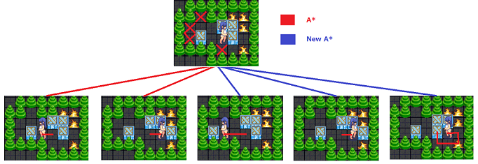
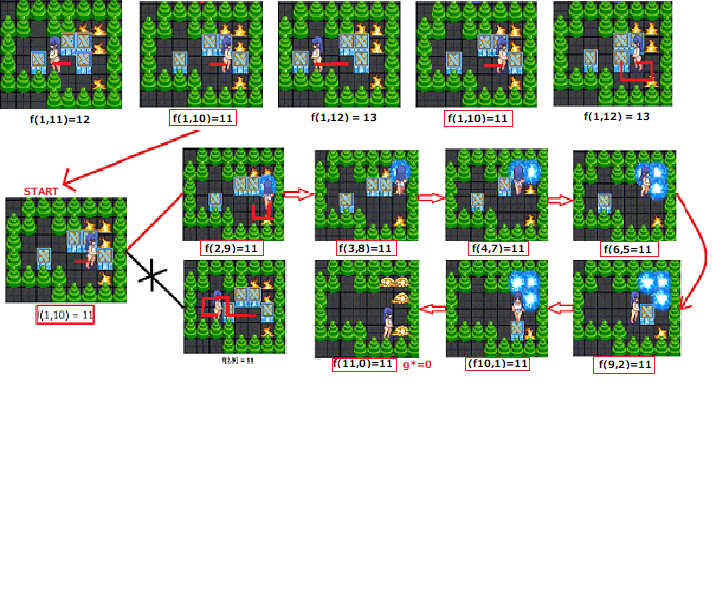

-A*：SokobanゲームのためにA*アルゴリズムを適用する。しかし、実行不可能な解を避けるために、A*アルゴリズムを少し改良して New A*、計算時間を短縮する：
ステップ1：すべてのデッドロック（箱が動かせず、目的地に到達できない場所）を除去する。
ステップ2：各ボックスの移動に対して最小のf*を見つける。
ステップ3：f* = g* + h* = f(g, h)を計算する。ここで、g*は現在のノードへの開始地点からのコストであり、h*は現在のノードから目的地までの見積もりコストである。
ステップ4：各移動ごとに、g*とh*の値を計算し、h*が0の場合、New A*アルゴリズムは終了し、ゲームが終わった。
ステップ5：ステップ1を繰り返す。
‣以下は、A* アルゴリズムの使用方法の図：
